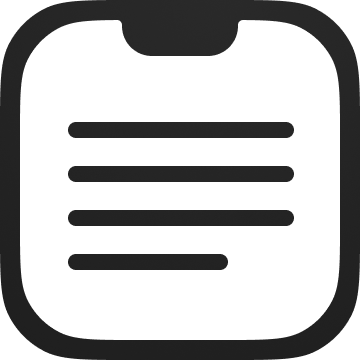
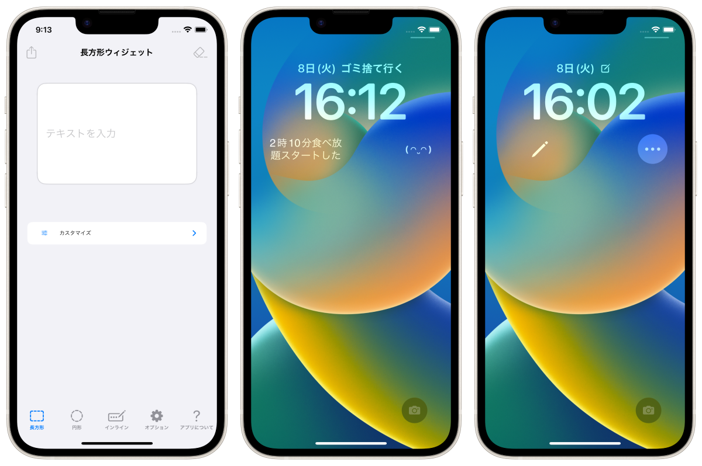
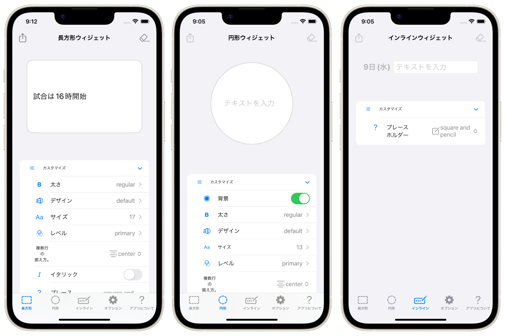
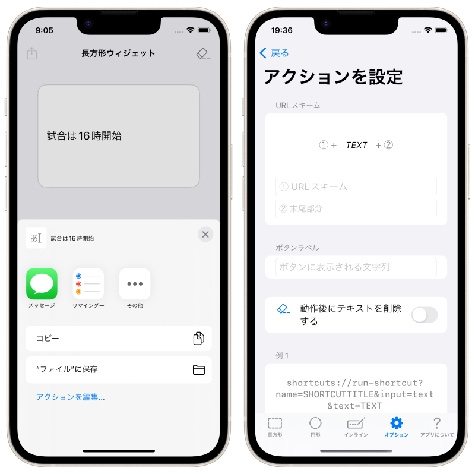

Приложение для ведения заметок, посвященное новой функции iOS16 Lock Screen Widget, которая выйдет осенью 2022 года!



Это приложение для заметок, специализирующееся на виджетах для экрана блокировки, приложение только для iPhone.
Когда вам нужно сделать заметку, вы можете быстро написать ее на экране блокировки и проверить заметку на экране блокировки в любое время!
Дизайн заметки на экране блокировки может быть гибко настроен, поэтому вы можете использовать его в соответствии с различными целями "оставления заметок" и "отображения текста на экране блокировки".
Нажмите на виджет, чтобы сразу же запустить клавиатуру и отредактировать заметку.




iPhone 14 Pro с функцией Always On Display превращает ваш iPhone в самый близкий к вам блокнот.
Цитата: https://www.apple.com/jp/iphone-14-pro/
Бесплатно
Скрыть рекламу (160 иен)